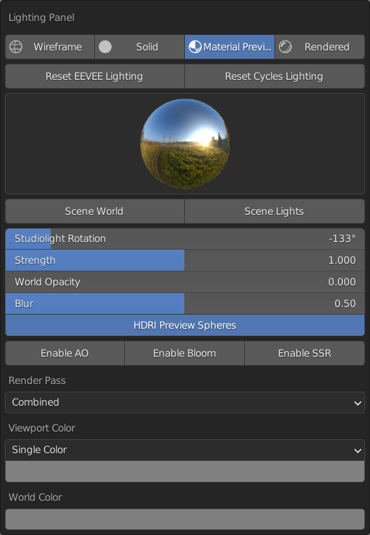
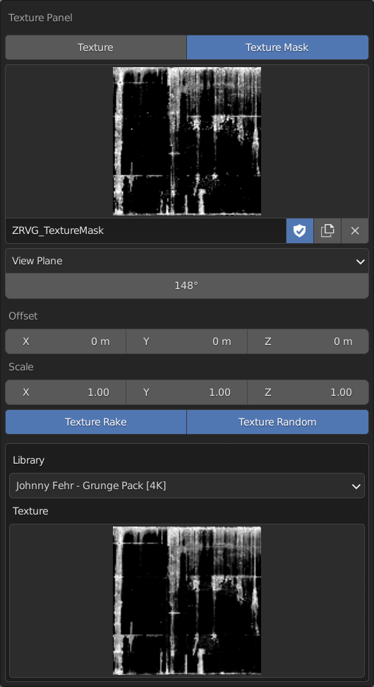
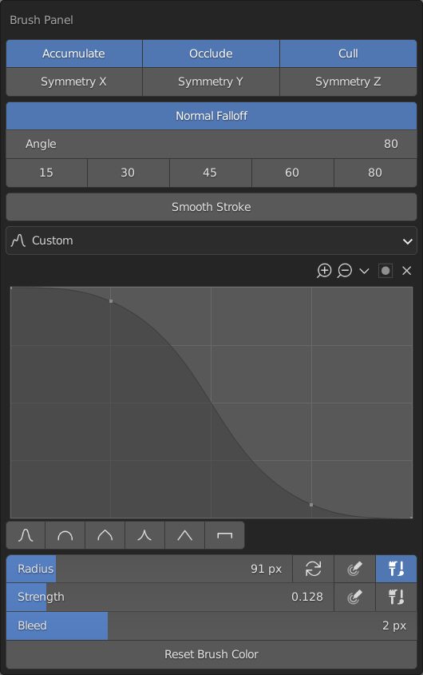
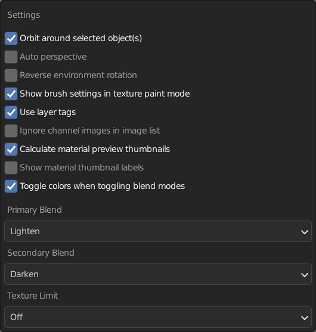
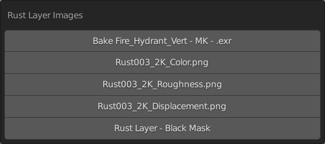
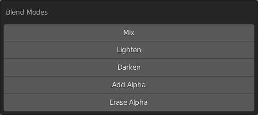

Panels
Ravage comes with a variety of popup panels that make the texturing process that much less of a burden. These panels can be accessed using the set hotkeys.
Lighting Panel (Shift + Alt + Q)
The lighting panel makes it easy to quickly access lighting properties and adjust them on the fly.
The lighting panel also contains operators that set the lighting whether EEVEE or Cycles to optimal texturing conditions.

Texture Panel (Shift + Alt + W)
The texture panel is only available in the texture paint context. It makes available settings that help with using textures on the active brush.
The texture panel also has an operator to quickly import textures from a set library onto the active brush.

Brush Panel (Shift + Alt + E), (LMB)
The brush panel has commonly used brush properties and preset operators for the brush normal angle.

Settings Panel (Shift + Alt + R)
The settings panel puts together properties that are helpful in the texturing context but are in different sections of the Blender preferences.
There are also some Ravage specific properties from the addon preferences that can be set in this panel.

Active Image Panel (Alt + `)
This allows you to quickly set the active image being painted on without hunting through the texture slots.
It shows all the images on the active layer and can be set to leave out the main channel images.

Blend Mode Panel (Ctrl + Alt + MMB)
This panel stores 5 of the you favorite brush blend modes for quick access. They are set in the addon preferences.
